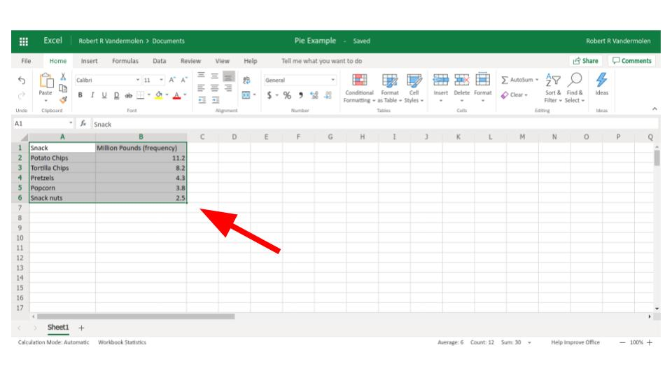
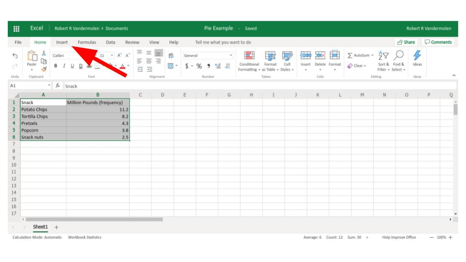
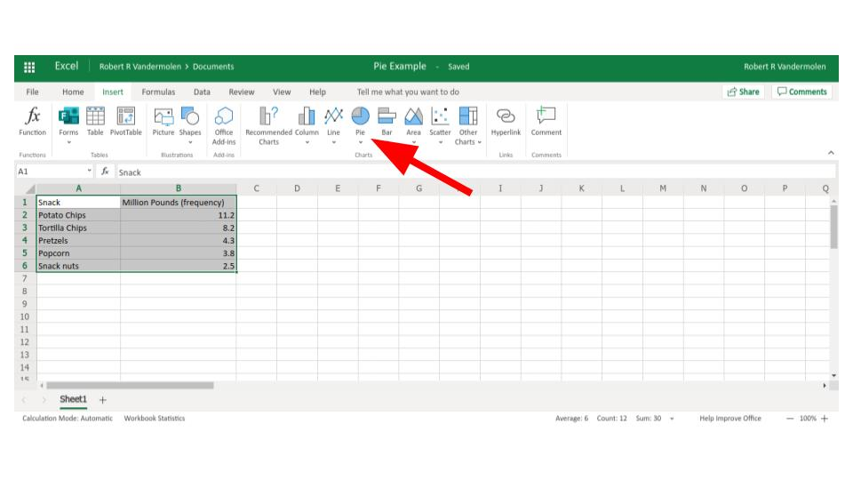
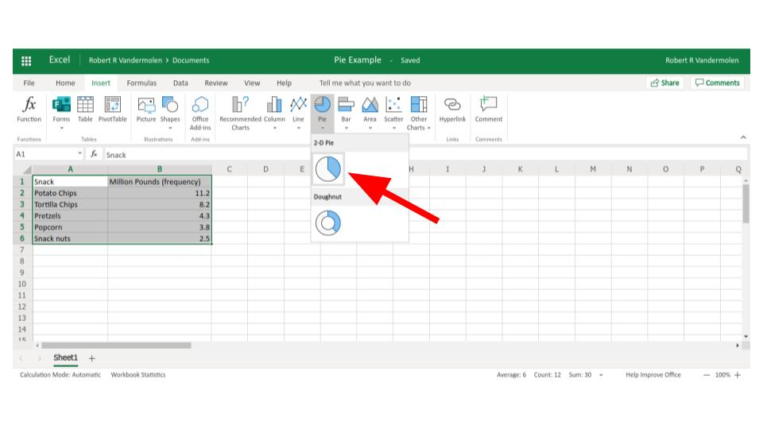
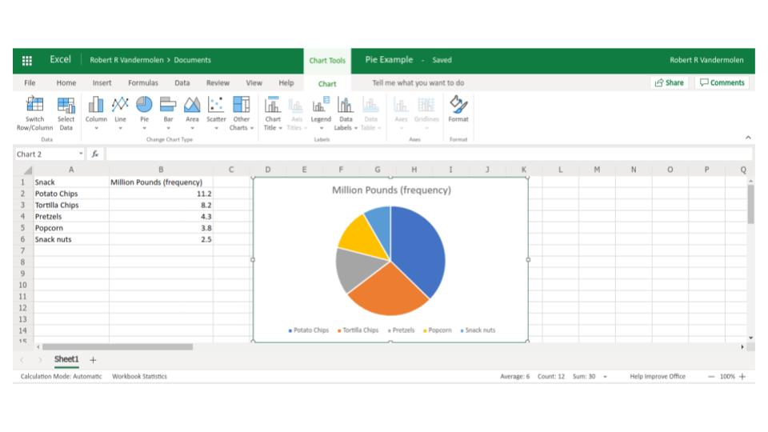

Step 1:
Highlight the data

Step 2:
Click "insert" in the top menu

Step 3:
Click the Pie Graph option

Step 4:
Choose pie graph

Step 5:
Done

If you want to see this done watch the following video: